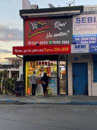
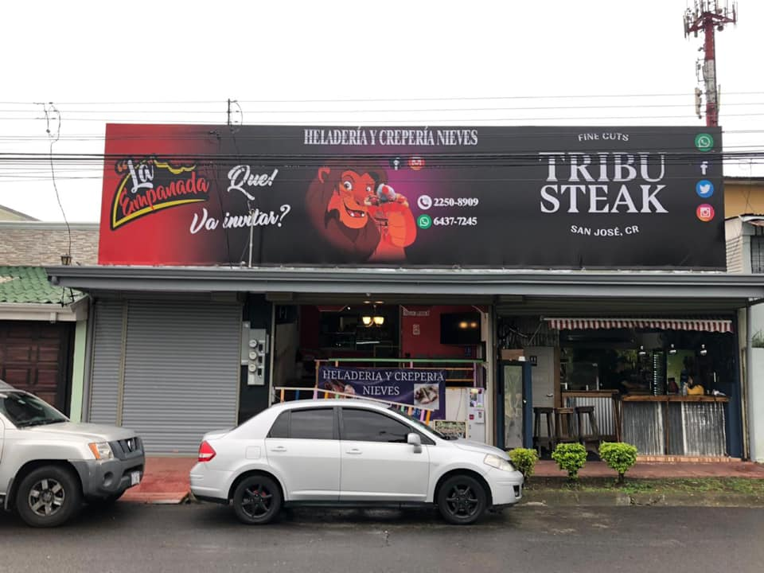

Home
|
(Menú)
|
(Contacto)
|
(Promociones)
|
(Trabaja con nosotros)
|
(Express)
|
(Restaurantes)
Sucursales
Actualmente, nuestra franquincia cuenta con dos sucursales, los puedes encontrar en Alajuelita Centro y en San Francisco de dos ríos, frente al Parque Okayama
Soda y Cafetería "La Empanada"
"La Empanada Alajuelita"

"La Empanada Parque Okayama"
